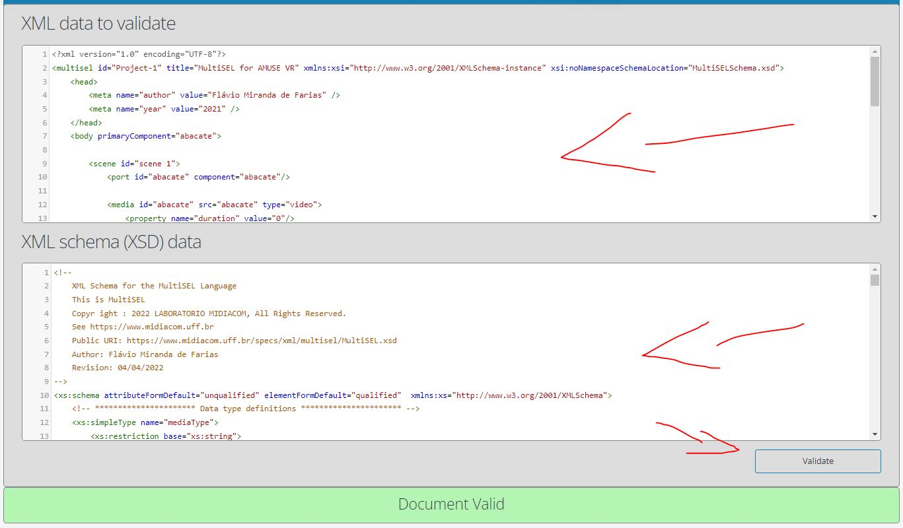

Siga os passos a seguir caso não tenha conhecimento sobre XML Schema.
Baixe o projeto compactado ( zip) e descompacte onde achar melhor, com resultado terá dois aquivos:
Para usar como auxiliar na escrita (recomendado), baixe o editor Visual Studio Code (VSC) em https://code.visualstudio.com/download, segundo a versão de sua escolha. Após baixar, instale o editor.
Com editor aberto, é necessário instalar a extensão responsável por reconhecer o XML Schema. Para isso, no VSC aberto clique no botão extensões localizado no lado esquerdo ou aperte CTLR+SHIFT+X.
Agora é necessário digitar na caixa de pesquisa o nome da extensão chamada XML Language Support by Red Hat.
Após encontrar a extensão, é só clicar no botão azul chamado instalar e aguardar a instalação.
Após a instalação, pode abrir o arquivo Projeto_MultiSEL_for_AMUSEVR.xml pelo VSC. Caso esteja tudo correto, o VSC estará validando em tempo de execução seu código MultiSEL, apontando possíveis erros e até auxiliando com ações de autocompletar código e listando as tags e elementos possíveis naquele campo com o comando CTLR+ESPAÇO.
Caso não tenha dado certo, pode me contactar em fmflavio@gmail.com para tirar dúvidas.
Caso optar por não instalar o VSC ou não for possível, ainda assim é possível validar seu código depois de pronto pelo link https://www.liquid-technologies.com/online-xsd-validator. Para tal é só inserir seu projeto MultiSEL na caixa de cima, colar o conteúdo do XML Schema na caixa de baixo e por fim clicar no botão validar.
